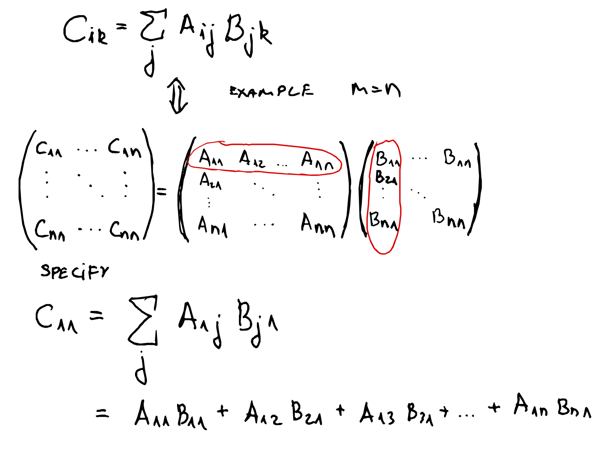

Introduction#
We shall give examples in Jupyter notebook for simple implemtation and brevity.
Definitions#
Tensors are multi-dimensional arrays of numbers. Diagrammatically we denote a tensor as a filled in solid shape with legs. The legs of a tensor represent the order (rank) of the tensor. In particular, we denote
{kind=link}
Tensor networks are comprised of multiple tensors, where the shared legs denote a contraction (or summation) over this index. Below we make the simplest possible example of a tensor network.
{kind=link}
More specifically, this tensor network implies a contraction and if we take the example of square matrices of size n by n we have
{kind=link}
So we see that that tensor networks are nothing but a graphical language to tell us to do matrix-matrix multiplication. So each tensor network can be written down as a summation over selected indices.
We can now provide further examples such as the one that involves more legs. In case of three leg tensor we can have.
{kind=link}
Lets get our feet wet by defining our first tensor in programming language Python!
import numpy as np
# define a vector of size 8 where the elements are integers between 1 and 8
A_vec = np.array([1,2,3,4,5,6,7,8])
# redefine the vector into a 3-rank tensors
A_ten = A_vec.reshape(2,2,2)
print("A vector = ", A_vec)
print("A tensor = ")
print(A_ten)
A vector = [1 2 3 4 5 6 7 8]
A tensor =
[[[1 2]
[3 4]]
[[5 6]
[7 8]]]
We use the print command to show the output as it is complied in Python version 3.10.
So what have we actually done? In particular
{kind=link}
In this case one is able to visualize the values using 3 dimensions as there are only 3 legs (directions), but it is easy to see how this extends to multiple legs. One can think of each of the legs to represent the particular qubit! We shall illustrate that later.
Note
The given example of a vector is useful in the context of quantum information theory. In particular, we have selected the approprite partition of the vector into a tensor with legs of dimension d = 2 (local Hilbert space dimension).
Exercise: Define the correct reshape for
any integer n qubits of local dimension d = 2
any arbitrary local Hilbert space dimension, e.g. qudits d = 3
Tensor Network Contractions#
Now we will describe the contraction operation in a tensor network. However, before that we need two operations and those are
reshape (already discussed above)
permutation (we discuss next)
Permutations#
The permutation implies the following.
{kind=link}
In python code this is
# permutation (transposition)
A_ten_trans = A_ten.transpose(0,2,1)
print("A tensor transposed = ")
print(A_ten_trans)
A tensor transposed =
[[[1 3]
[2 4]]
[[5 7]
[6 8]]]
Notice that we have just shuffled some elements of the tensor around. All the values are still there, just in a different position as compared to our original tensor given above. Note that the transposition in Python start from 0 index, and the logic is obvious from the construction. In the transposition array we only have assign from where the old leg comes, and put into the order where we want it to be. Another example of the transposition is given below.
{kind=link}
Note
Exercise: Provide the python code for example of 4 legs for the example above.